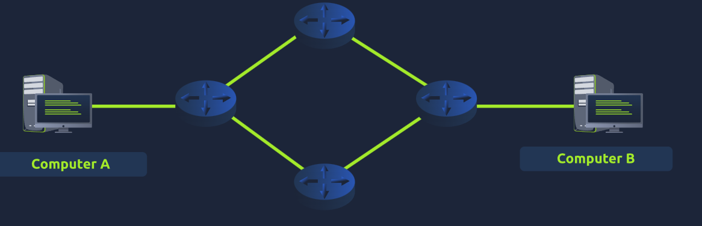
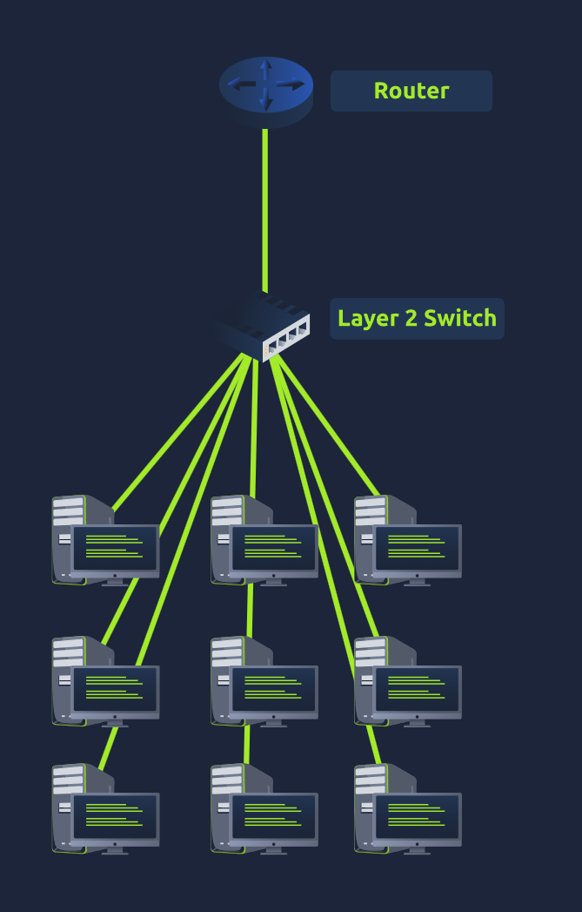

Extending Your Network
Learn about the technologies used to extend networks — port forwarding, firewalls, VPNs, and Layer 2/3 switches.
Port forwarding is essential for connecting applications and services to the internet. Without it, servers are only accessible within the same local network (intranet). Port forwarding opens specific ports on a router so external traffic can reach internal servers. Different from firewalls — port forwarding opens ports, firewalls determine if traffic can travel across them.

Without port forwarding — server accessible to local network only

With port forwarding — server accessible from the internet
- What is the name used to describe the internal network accessible within a company?Intranet
A firewall determines what traffic is allowed to enter or exit a network — like border security. Rules can be based on: source network, destination network, destination port, and protocol (TCP/UDP/both). Firewalls perform packet inspection. Two primary categories: Stateful (uses entire connection context, dynamic decisions, resource-intensive — blocks entire device if connection is bad) and Stateless (uses static rules on individual packets, less resource-intensive but less intelligent — only as good as rules defined, useful against DDoS).
- What is the technical term for the type of firewall that inspects the entire connection?Stateful
- What is the technical term for the type of firewall that inspects individual packets?Stateless
Opened a static site showing 198.51.100.34 sending malicious traffic to web server 203.0.110.1 on port 80. Configured the firewall to block the malicious packets from reaching the web server.
- What is the flag given after successfully dropping all the packets from the target IP address?THM{FIREWALLS_RULE}
A VPN allows devices on separate networks to communicate securely via a dedicated encrypted tunnel. Devices remain part of their original networks but also form a private network together. Benefits: geographical connectivity, privacy (encryption), anonymity. VPN technologies: PPP (authentication and encryption, non-routable), PPTP (allows PPP data to leave network, easy to set up but weakly encrypted), IPSec (encrypts using IP framework, difficult to set up but strongly encrypted and widely supported).

VPN connecting two separate office networks
- What VPN technology only encrypts and provides the authentication of data?PPP
- What VPN technology uses the IP framework?IPSec
Routers connect networks and pass data between them (routing). Operate at Layer 3 of OSI. Often have admin interfaces for configuring port forwarding and firewalling. Routing protocols choose the best path based on: shortest path, reliability, connection speed (copper vs fibre). Switches: Layer 2 switches forward frames by MAC address only. Layer 3 switches can also route packets using IP — these are exclusive (a Layer 2 switch cannot operate at Layer 3). VLAN (Virtual Local Area Network) — virtually splits devices into separate segments for security. Example: Sales and Accounts can both access the internet but cannot communicate directly with each other.

Router selecting optimal path between networks

Layer 2 switch — forwards frames by MAC address

VLAN segregation — departments on separate virtual networks
- What is the verb for the action that a router does?Routing
- What are the two different layers of switches? Separate by a comma.Layer 2, Layer 3
Opened the network simulator and sent a TCP packet from Computer 1 to Computer 3. Counted the handshake entries in the network log.
- How many HANDSHAKE entries are there in the network log?5
- What is the flag given after successfully performing the simulation?THM{PACKET_STAR}